TCR Door Alignment and Adjustment
What is Affected
Only perform this procedure if one or more of the following issues occurs on the Panther System;
- The TCR
 Target capture reagent—An assay-specific reagent added as part of specimen pipetting. door fails to lock/unlock during loading/unloading of TCR/TER reagents.
Target capture reagent—An assay-specific reagent added as part of specimen pipetting. door fails to lock/unlock during loading/unloading of TCR/TER reagents. - Friction is felt while closing/opening the TCR door, especially at the locking tab and front cover.
- The door and/or flap indicators register incorrectly in the Panther System user interface as Open when closed.
- The TCR door does not naturally return to rest against the magnet screw in the front cover, when slight pulling force is applied and then released while the door is locked.
Important Things to Remember
- The TCR Door Alignment and Adjustment procedure may need to be performed every time the system is moved.
- The TCR door alignment and function needs to be checked periodically during service visits.
Parts and Materials Required
- 2.5 mm hex key
- 3 mm hex key
- Flashlight
- Loctite 242
- Small adjustable crescent wrench
Time Required
- 30 minutes
Reference
Procedure
- Prior to starting this procedure, ensure that the Panther System meets the following conditions:
- The system is level (System Leveling).
- All canopy mounting screws are installed.
- All side panels are mounted correctly and parallel.

Warning—Adjusting the system feet may require Pipettor arm re-teaching, check the Pipettor alignment after adjusting the system feet. - Identify the possible source(s) of impairment to door movement from the following list and reference the following sections for associated corrective measures.
Friction Observed Between the Locking Tab and Locking Pin Hole
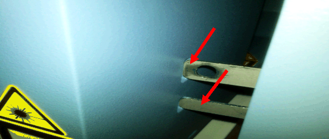
Use one or more of the following procedures to reduce friction at the locking tab/tab hole:
- Adjust the right front foot of the system in ¼ turn increments, up or down, to minimize any friction observed in the interaction between the locking tab and the locking hole.

Note—If adjusting the right front foot alone is not sufficient, all four system feet may require adjustment to minimize the observed friction at the locking tab and locking hole. - The Sample Bay Barcode Scanner can affect positioning of the Front Cover. Ensure that the Sample Bay Barcode Scanner mounting screws have not loosened.
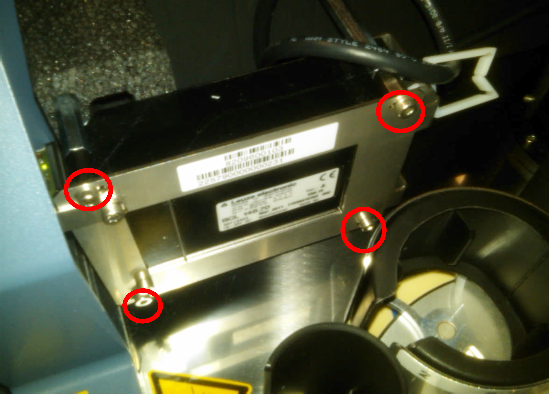
Note—These screw locations are slotted and can be loosened to further adjust the front cover mounting location if necessary. - Adjust the three Front Cover mounting screws located behind the TCR Door.
- Loosen the one mounting screw located behind the TCR Door locking tab.
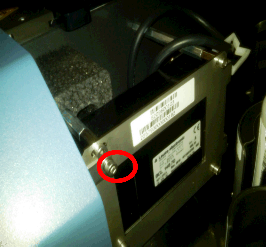
- Loosen the two screws located behind the TCR Door hinge.
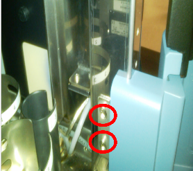
- Adjust the Front Cover in either direction to minimize friction at the TCR Door tab.
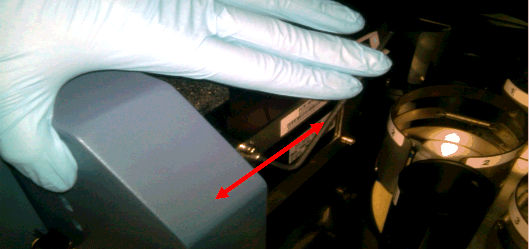
- Apply Loctite 242 to exposed threads before re-tightening the mounting screws. An optional lock washer can also be added to these screws to help keep the Front Cover in place.
- Loosen and re-install the side trim pieces. Sometimes, this provides enough adjustment to minimize friction at the interface between the door locking tab and the tab hole.
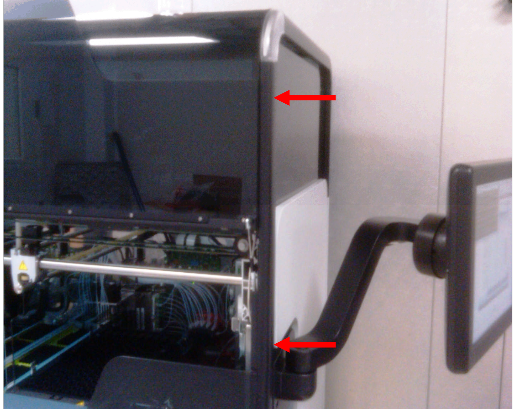
Incorrect Routing of Sensor/PCB Wiring Harness
Friction Between TCR Door and Canopy Trim
TCR Door Hinge Mounting Screws
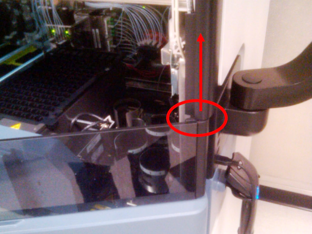
|
|
Note—When removing the Front Cover module, ensure that all ribbon cables and connectors are properly routed to prevent damage to the wiring when reinstalling the Front Cover. |
If this occurs, complete the following steps:
- Remove the two mounting screws.
- Adjust the position of the hinge to correctly align the TCR Door locking tab to the tab hole.
- Apply quick-setting two part epoxy or equivalent to the mounting screw holes to prevent the screws from coming loose.
Note—Steps 3a–3c of the Friction Observed Between the Locking Tab and Locking Pin Hole procedure may need to be repeated after the hinge has been reattached and the epoxy has set.
Misadjusted TCR Door Magnet Screw
- After physically verifying by hand that the TCR Door has no observable friction points, turn the system on and start Service Software.
- Test the locking and unlocking of the TCR door, and adjust the magnet screw and/or adjust the three front cover screws to ensure that the following conditions are met:
- Friction during opening and closing the TCR Door is minimal—If excessive friction is still observed, re-inspect the door for other possible sources of friction. Excessive friction exists if the TCR Door will not "naturally" return to rest against the magnet screw when the magnet screw is adjusted properly.
- The TCR Door interlock pin has sufficient clearance to the edges of the hole in the locking tab—The TCR Door should unlock and lock properly without having to apply pressure to the door when pressing Lock or Unlock in Service Software.
Note—Ensure that the edges of the locking tab and the pin hole are smooth and have been de-burred. - The interlock pin should fit somewhere in the middle of the pin hole in the locking tab and should not rub on the edges of the pin hole when the TCR Door is locked.
- Use a flashlight to verify pin positioning in the locking tab hole while the TCR door is locked.
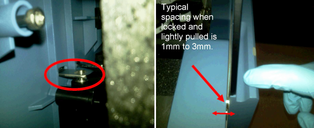
- Re-adjust the magnet screw to correct the locking pin positioning in the pin hole and to ensure the proper amount of TCR Door movement when the door is locked.
TCR Door Registers as Open when the Door is Closed
If the TCR Door is shut properly, the door should register as Closed when sensors are read in Service Software. Adjusting both the magnet screw and the Front Cover can resolve this issue.
- Adjust the magnetic screw to position the door so that when the door is shut, it and the TCR Door flap sensors register as Closed in Service Software.
- Loosen the mounting screw and adjust the front cover if necessary to correct the sensor readings.
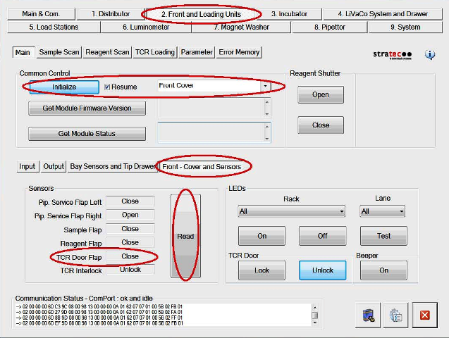
TCR Door Pull Test
- While the TCR Door is locked, gently pull on the door to verify the 1 mm–3 mm range of "play."
The Front Cover sensor indicators should continue to register as Closed when the door is gently pulled while it is locked.
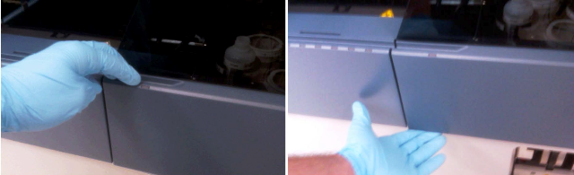
If the door continues to perform as described, then the TCR Door is reliably aligned.
Note—If the door does not return to rest properly against the magnet , or the door does not return to Closed status in Service Software, continue with the previous steps to adjust both the Front Cover and the magnetic screw until these conditions are met. - If the TCR Door magnet screw cannot be adjusted to satisfy the conditions described above:
- Loosen the Front Cover mounting screw and apply inward pressure to the Front Cover while re-tightening the screw.
- Repeat the Misadjusted TCR Door Magnet Screw procedure.
Door Still Fails to Unlock/Lock After Alignment Procedure
If friction has been removed from movement of the TCR Door during opening and closing, the TCR Door adjustment and function have been verified in Service Software, the pin spacing in the pin hole has been visually inspected and verified to be correct, and the door still fails to lock and unlock intermittently:
- Replace the TCR Door Interlock Module.
- Realign and test the TCR Door.
Verification
- Open and close the TCR Door.
- In Service Software navigate to Front and Loading Units > Front - Cover and Sensors and click Read.Verify that the TCR Door Flap sensor status reads Closed.
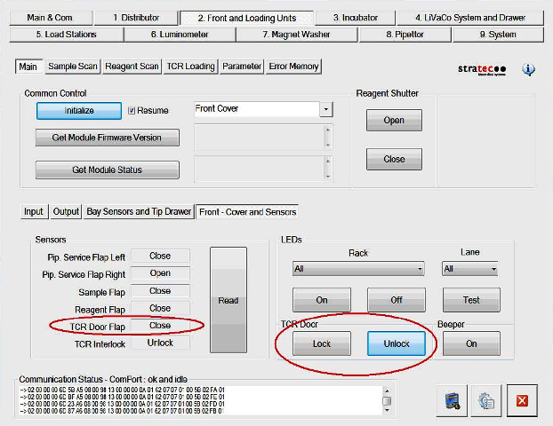
- With the TCR Door closed, click the Lock button.
- Verify that the lock engages.
- Lightly pull on both the top and bottom of the TCR Door.
- Verify that there is a small amount of space between the TCR Door and the Front Cover when the door is pulled (1 mm–3 mm is typical).
- Release the TCR Door and verify that it is pulled against the front cover by magnetic force.
- Repeat step 2.
- Verify that the TCR Door Flap sensor status is Closed.
- Repeat steps 1–6 several more times to ensure proper operation and movement of the TCR Door and door lock.
 button at the top of the page to send feedback, comments, or change requests.
button at the top of the page to send feedback, comments, or change requests.